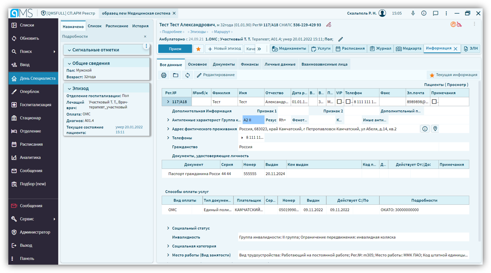
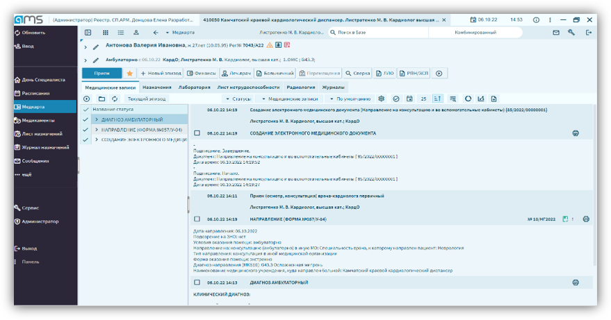
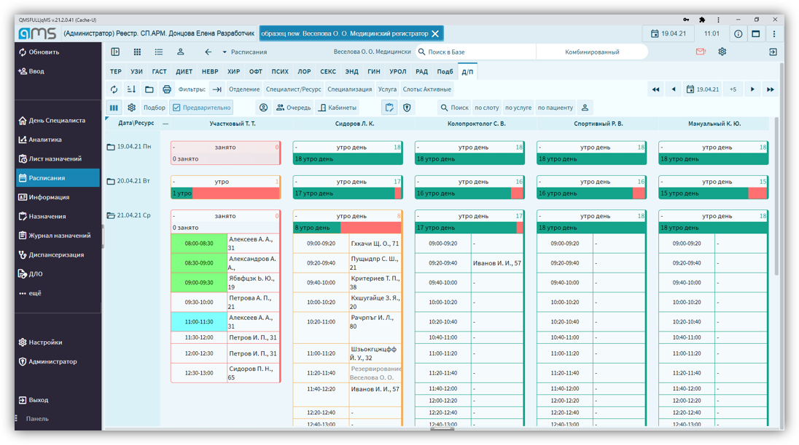
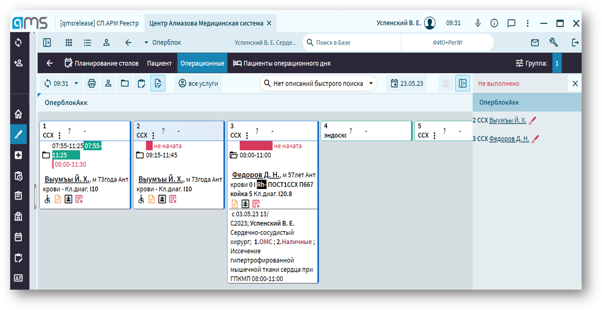
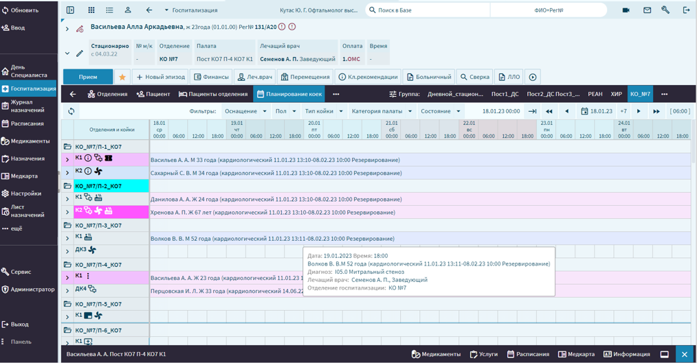
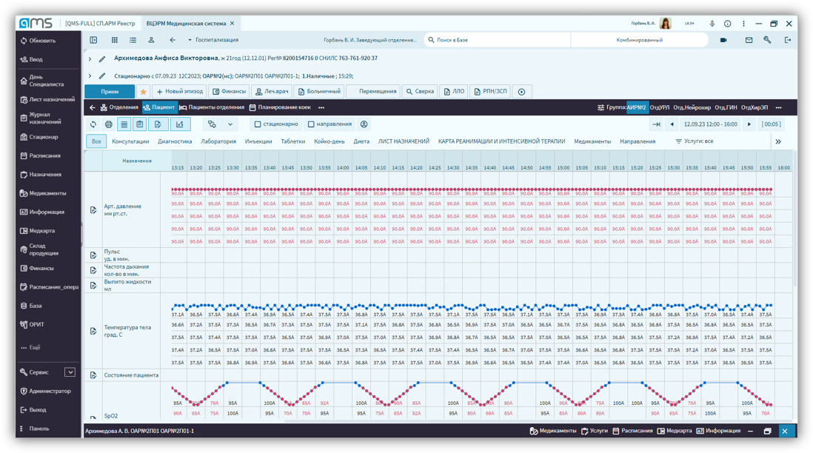
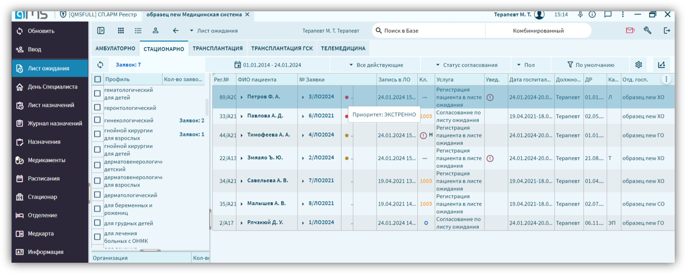
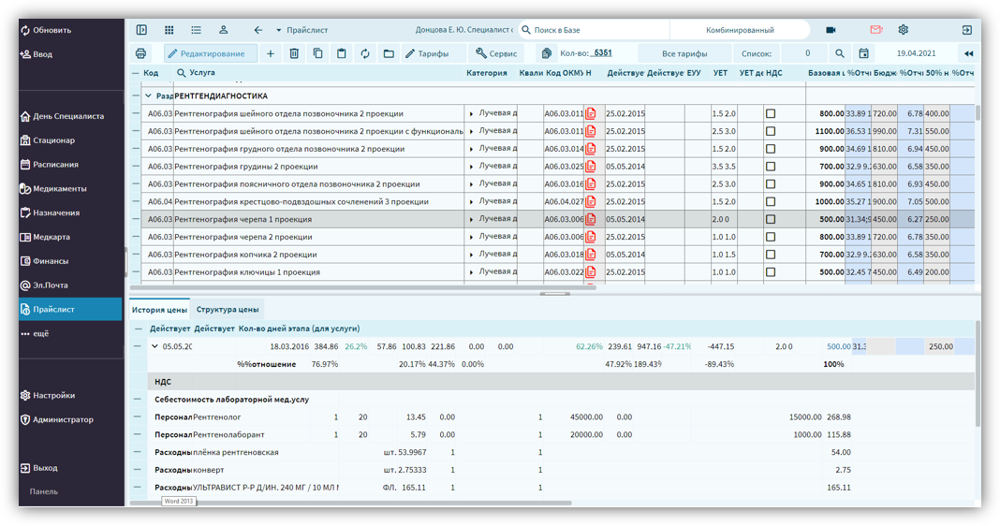
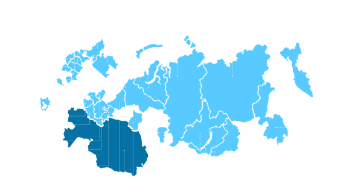

Полнофункциональная медицинская информационная система, которая объединяет руководителей, медперсонал, лаборатории, страховые организации и пациентов в одном информационном пространстве.
qMS структурирует все основные информационно-аналитические процессы учреждения и адаптируется под клинику любого масштаба — от частного кабинета до региональной сети.
Объединяет руководителей клиник, медперсонал, лабораторные службы, страховые организации и пациентов.
qMS внедрена более чем в 300 клиниках, больницах и лабораториях.
Система развивается вместе с клиникой и учитывает актуальные тренды медицинской информатизации.
Полный охват клинических, диагностических, административных и финансовых процессов. Нажмите «+», чтобы увидеть детали.
Система поддержки принятия врачебных решений с использованием ИИ.
Полный отказ от бумажных носителей и рутинного заполнения.
Гибкая настройка полей и интеграция с внешними базами.
Расписание кабинетов, специалистов и информационные панели.
Интеграция с контакт-центрами и мессенджерами.
Управление коечным фондом, операционными и реанимацией.
Управление очередями и подготовка к плановой госпитализации.
Структурированный ввод данных осмотра с формированием протокола.
Помощь врачу в формулировке диагноза и сборе анамнеза.
Расчёт доз, контроль взаимодействий и антибиотикорезистентности.
Визуализация показателей здоровья во времени.
Полный цикл организации питания в стационаре.
Встроенный справочник клинических рекомендаций Минздрава РФ.
24 модуля покрывают все ключевые процессы медицинской организации. Нажмите «+» для подробностей.
Единая карта со всеми медицинскими записями.
Запись, расписание, лист ожидания.
Полный цикл лабораторной диагностики.
Коечный фонд, отделения, госпитализация.
Планирование и мониторинг операций.
Мониторинг и интеграция с оборудованием.
Учёт медикаментов и маркировка.
Прайс-лист, тарифы, ОМС и ДМС.
Отчёты, мониторинги и статистика.
Организация профилактической работы.
Экспертиза качества и временной нетрудоспособности.
Работа с обращениями и автодозвон.
Доступ к истории лечения и записи на приём.
Дистанционные консультации врачей.
Вспомогательные репродуктивные технологии.
Переливание крови и её компонентов.
Учёт ТМЦ и центральное стерилизационное отделение.
Федеральные и внутренние формы.
Учёт пациентов по заболеваниям.
Формирование документов для оплаты.
Работа с льготными категориями пациентов.
Лучевая диагностика и интеграция с оборудованием.
Оперативные данные в реальном времени.
Работа службы скорой медицинской помощи.
Реальные экраны системы: от регистрации пациента до управления стационаром и операционным блоком.

Единая форма регистрации с полями, словарями и сверкой полиса ОМС.

Просмотр подписанных документов, направлений и ЭЦП прямо из системы.

Цветовая индикация занятости, поиск и запись с учётом длительности назначений.

Планирование столов, пациенты операционного дня, контроль выполнения.

Визуализация коек по отделениям, планирование госпитализаций.

Автоматический сбор показателей АД, пульса, SpO2 и температуры с приборов.

Приоритет очереди, согласование направлений и резервирование мест.

Реестр пролеченных больных, баланс дохода и себестоимости по случаю.
qMS обменивается данными с государственными сервисами, лабораторным и диагностическим оборудованием, а также внешними системами.
Интеграция с федеральными регистрами здравоохранения.
Обмен данными с территориальными фондами ОМС.
Обмен данными с 1С и Парус.
Интеграция с PACS-системами производителей.
Организация автодозвона и рассылок.
Интеграция с агрегаторами медицинских услуг.
Подключение оборудования рабочих мест.
Интеграция с анализаторами и сортерами.
ЭКГ, тонометры и другое оборудование.
Прямой сбор показателей с приборов.
Контроль межлекарственного взаимодействия.
Мониторинг движения лекарственных препаратов.
Электронная подпись документов пациентом.
Точная идентификация пациента на всех этапах, контроль выполнения назначений и защита данных.
Браслеты со штрих-кодом на всех этапах.
Подтверждение каждой манипуляции через сканирование.
Важные отметки, видимые врачу.
Автоматический расчёт рисков для пациента.
Уведомление о критических лабораторных показателях.
Сертификация и соответствие нормативам РФ.
Полная картина работы клиники в реальном времени и автоматическая отчётность для руководителя.
Загрузка коек по отделениям и в динамике.
Работа консультативной службы.
Мониторинг операций и осложнений.
Объёмы услуг по источникам финансирования.
Протоколы и автоматизированная экспертиза.
Работа с листами нетрудоспособности.
Гибкие выборки и сохранённые условия.
Полный реестр с финансовыми показателями.
Федеральные формы в электронном виде.
qMS внедрена более чем в 300 клиниках, больницах и лабораториях по всей России.

Среди наших клиентов — крупнейшие федеральные центры и региональные больницы России.